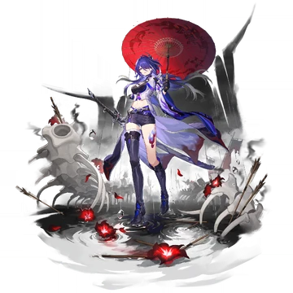
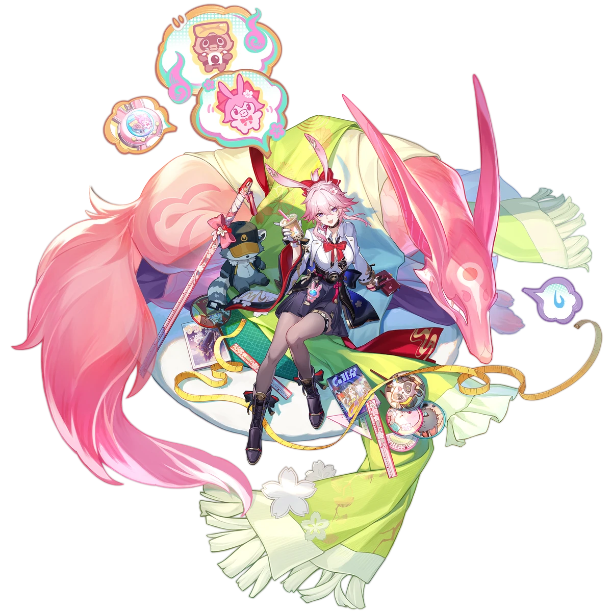
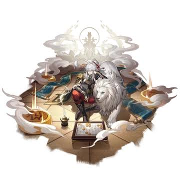
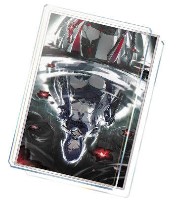
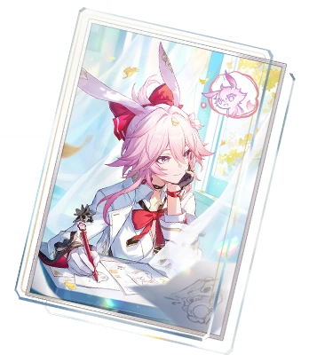
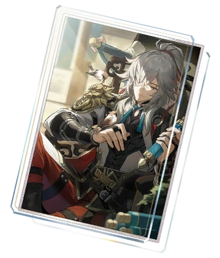
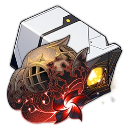
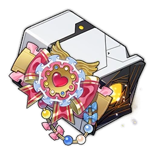
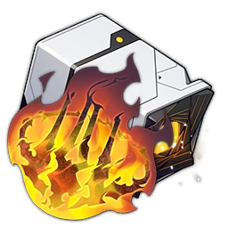

Đây là trang web giới thiệu sơ lược về một số ít thông tin trong tựa game HONKAI STAR RAIL
CHARACTER



LIGHTCONE



RELIC SETS












Honkai: Star Rail
là tựa game nhập vai chiến thuật theo lượt (turn-based RPG) mang phong cách giả tưởng vũ trụ, được phát triển bởi HoYoverse. Trong game, người chơi nhập vai "Nhà Khai Phá" (Trailblazer), bước lên con tàu vũ trụ Astral Express để du hành qua các thế giới xa xôi, giải mã bí ẩn về hạt nhân hiểm họa Stellaron và kết nối các văn minh trong dải ngân hà. Trò chơi gây ấn tượng mạnh nhờ đồ họa 3D chuẩn phong cách anime, âm thanh được đầu tư chỉn chu cùng cốt truyện viễn tưởng có chiều sâu. Lối chơi tập trung vào khả năng tư duy chiến thuật thông qua việc sắp xếp đội hình, phối hợp giữa các Vận Mệnh (Path) và Thuộc Tính để đánh vào điểm yếu của kẻ địch. Với hệ thống nhân vật đa dạng cùng cơ chế gacha hấp dẫn, Honkai: Star Rail đã nhanh chóng trở thành một trong những tựa game nhập vai thành công bậc nhất trên di động, PC và PlayStation 5.